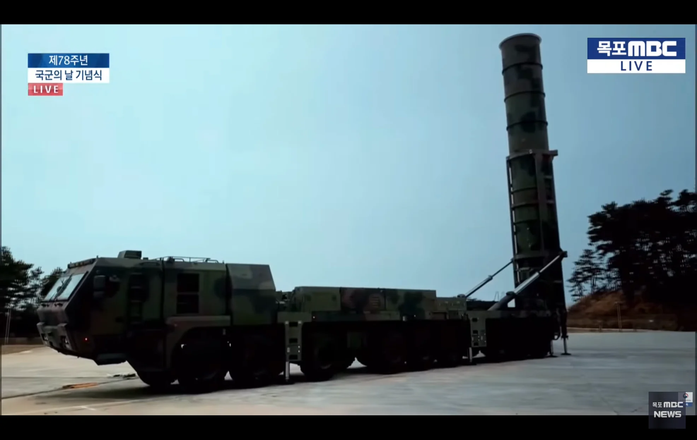

탄두를 가벼운 걸로 바꿔끼면 사거리가 늘어난가는 소리임?ㅋㅋ
..어?

탄두를 가벼운 걸로 바꿔끼면 사거리가 늘어난가는 소리임?ㅋㅋ
..어?
아이 지금 우리나라 500킬로 밖을 맞추기라도 하란 소리냐!
속도가 500km라고 ㅋㅋ
그럼 두시간 날리면 1000km 가는고에요?
그럼 두시간 날리면 1000km 가는고에요?
그렇게 말하시면 안되고요...
근데 진짜 살벌한게 한국은 핵 탄두에 쓰일 무기체계 거의 다 완성시키고 있음...
5(5)00km
확대해보면 앞에 뒤에 0이 하나 더 붙어 있지 않을까
10분간 교육 받으면 사거리가 늘어 난다고 들었어
방아쇠 힘줘서당기면 멀리날아감
화력도 쎄고 가벼운 탄두로 장착하면 사거리가 늘어남 ㅇㅇ 대기권 밖으로 나갔다가 다시 들어올수있을듯?
탄두 무게 줄이는건 쉬운줄알아?
일단 정훈교육부터 좀 하고 페인트칠 새로 하고
5....4....3....2.... 알지?
??? : 우크라이나에 선물을 좀 배달하고 싶은데요. 로켓 배송 되나요?
소코마데다
근데 우리가 천무쏠 상대들 생각하면
사거리 필요없긴해 ㅋㅋ
아 택배라고요ㅋㅋ 로켓배송 몰라요?
국방부 화력글은 국방부에서 만든다음 뿌리나요?
요즘 안보이다 지뢰 이후로 다시 자주 올라오넹ᆢㄷ
잘못한일 덮는 수단이 커뮤니티 국방부밈 올리는게 제일 잘 먹힘
님처럼 잘못한거 언급하면
"잘한거는 잘한거다 뭐 이런일에 초치냐" 이런 댓글 달림
그냥 개드립 가려고 올린거야 시발아
우린 지금은 500km정도만 가는 물건이 필요해서
그럼 500km이상 가는건 개발하는데 얼마나 걸리죠?
???: 3
3년이요?
???: 2.. 1..
음..... 500키로 정도가면 엔진이 꺼지게 셋팅을 했는데 혹시 오류가 생겨서 안꺼질수도있......
작고 화력은 더 큰...